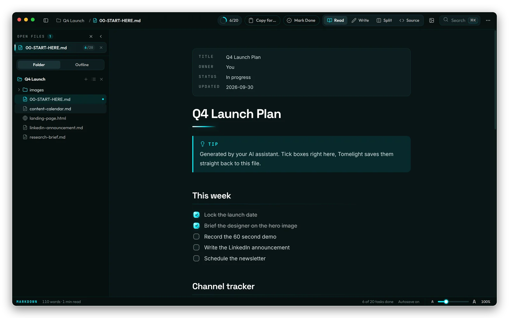
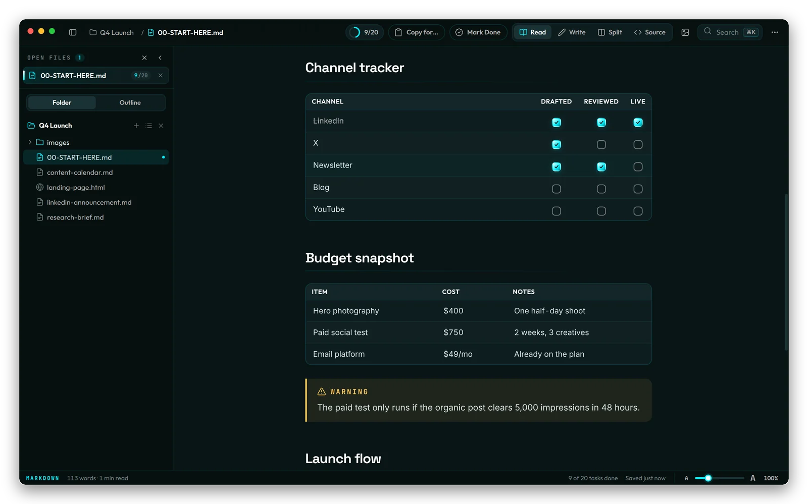
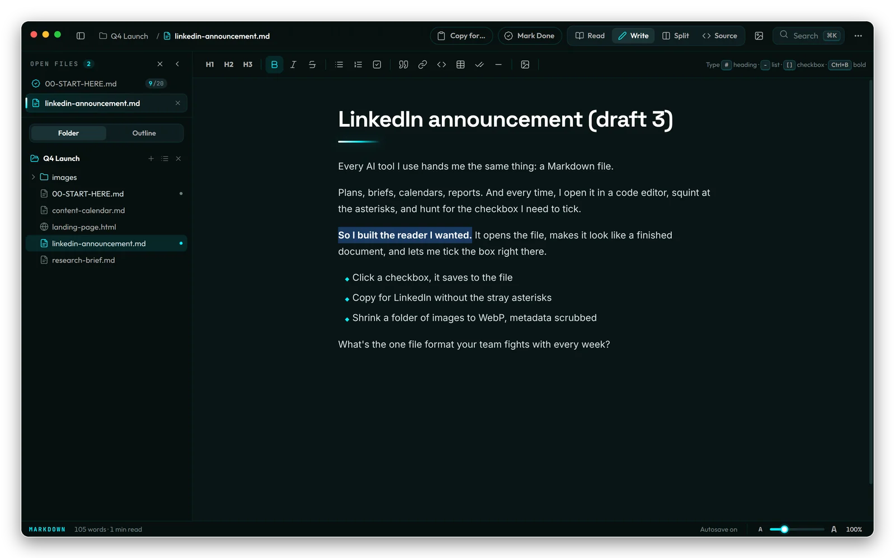
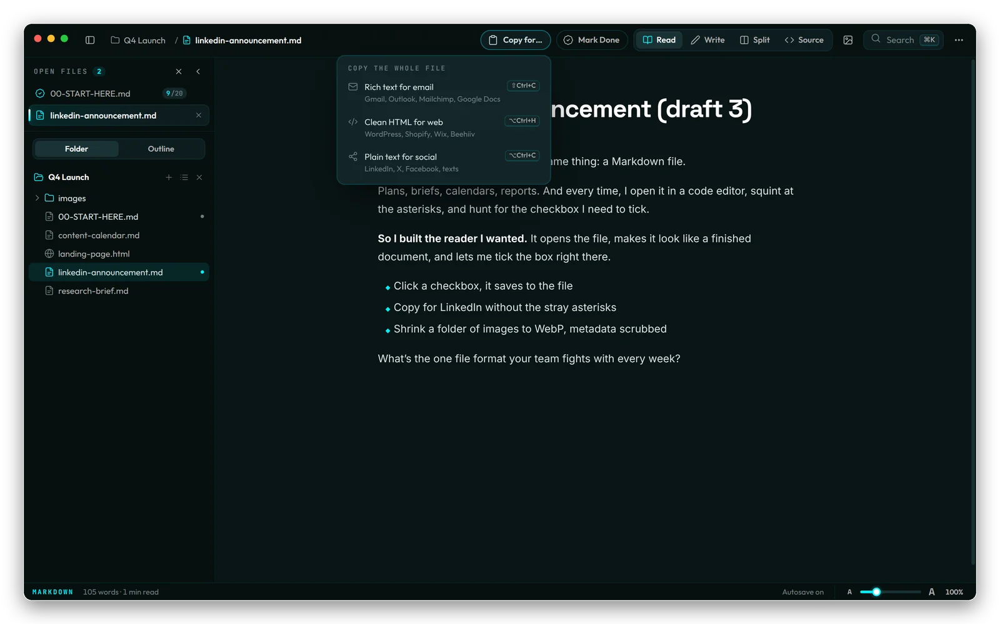
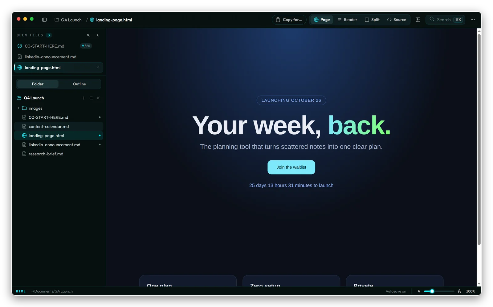
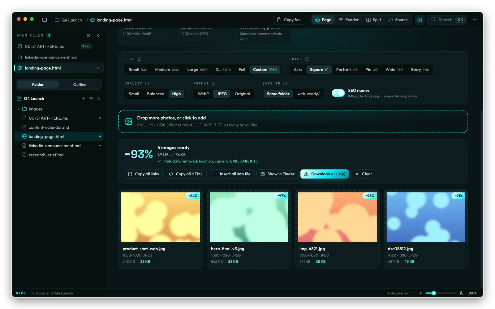
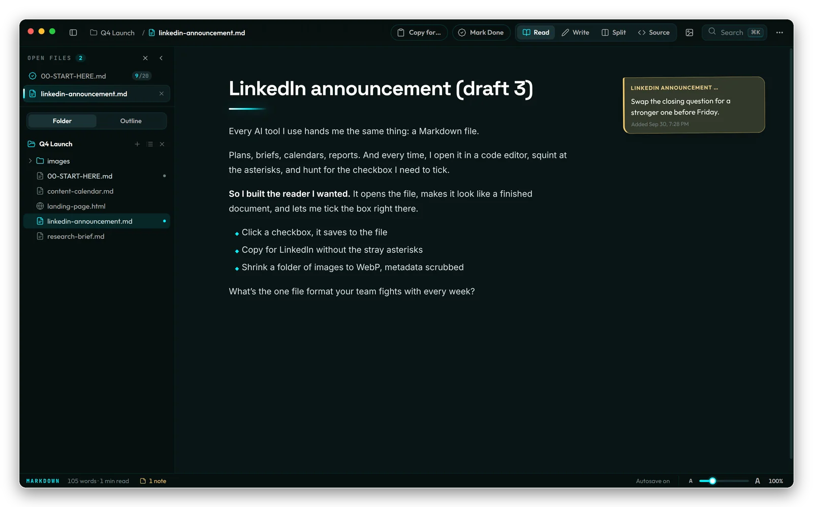

A free Mac app for the Markdown and HTML files your AI writes. Read them like finished documents, tick boxes right in place, and copy clean text anywhere.
Free and open source (MIT). macOS 12 or later. Not sure which Mac you have? Apple menu, About This Mac: "Apple M" means Apple Silicon. Install help
ChatGPT, Claude, Gemini and every agent hand you the same thing at the end of a task: a .md file. Plans, briefs, calendars, checklists. Here's what happens next.
Headings, tables and lists show up as a wall of #, | and **, usually inside a tool built for code.
To mark one task done you hunt for - [ ] and type an x between the brackets by hand.
Drop a draft into LinkedIn or an email and it arrives covered in ** asterisks you have to clean out.
Double-click any Markdown file and it opens as a typeset page with real headings, tables, callouts, footnotes, code and diagrams.

Every checkbox works, including the ones inside table cells, which is how most AI content calendars and trackers are built.

Write mode feels like Google Docs: a toolbar for bold, lists, checklists, tables and links, with clean Markdown saved underneath.

Rich text for Gmail and Outlook, class-free HTML for WordPress and Beehiiv, or plain text for social with real bullets and zero stray symbols.

Landing pages, reports and dashboards render with their CSS, JavaScript and fonts working, each one walled off in its own sandbox.

Pick what you're making, a blog post, Pinterest pin, Instagram post or YouTube thumbnail, and Image Studio sets the size and format for you.

Pin a note to any section. Notes live inside Tomelight, so your AI can rewrite the document and the note stays attached to its section.

No account, no analytics, no update pings. Tomelight makes no network requests of its own.
Wire by default, plus Nebula, Arcane and Parchment, or Auto to follow your Mac's light and dark mode.
Read, Write, Split and Source on ⌘1 to ⌘4, quick open on ⌘P, everything else on ⌘K.
Save any document as a PDF or a standalone HTML page.
From 70% to 200% with a slider, ⌘+ or a pinch on the trackpad.
MIT licensed. Read the code, file an issue or send a pull request on GitHub.
xattr -dr com.apple.quarantine /Applications/Tomelight.app
Prefer Terminal? That line does the same thing.
.md file, Get Info, set Open with to Tomelight, then Change All.I run 4 businesses and every AI tool I use hands me a Markdown file, so I was reading launch plans and content calendars in VS Code and typing x's between brackets to tick boxes. I built the reader I wanted for my own AI workflow, and now it's free for yours.
No. Read mode shows a finished document, and Write mode works like a normal document editor. Tomelight writes the Markdown for you.
Only when you change something: ticking a box, editing in Write or Split, or running Tidy. Sticky notes are stored inside the app and never written into your files.
Apple shows that warning for apps that aren't notarized through its paid developer program. Tomelight is open source, so you can read every line of the code it runs. Use Open Anyway once and it opens normally from then on.
Yes. Tomelight is MIT licensed, with no account, trial or paid tier.
Not yet. Mac comes first. Windows and Linux builds are on the roadmap on GitHub.